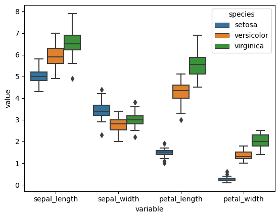

Pandas: Advanced Data Manipulation and Aggregation#

In this lesson, you will learn advanced data manipulation techniques using Pandas. Specifically, we will cover:
Combining dataframes
Data aggregation
Data reshaping
# Load dependencies (NumPy and Pandas)
import pandas as pd
import numpy as np
# We will keep using the Iris dataset for this tutorial
iris_df = pd.read_csv("https://raw.githubusercontent.com/mwaskom/seaborn-data/refs/heads/master/iris.csv")
iris_df
| sepal_length | sepal_width | petal_length | petal_width | species | |
|---|---|---|---|---|---|
| 0 | 5.1 | 3.5 | 1.4 | 0.2 | setosa |
| 1 | 4.9 | 3.0 | 1.4 | 0.2 | setosa |
| 2 | 4.7 | 3.2 | 1.3 | 0.2 | setosa |
| 3 | 4.6 | 3.1 | 1.5 | 0.2 | setosa |
| 4 | 5.0 | 3.6 | 1.4 | 0.2 | setosa |
| ... | ... | ... | ... | ... | ... |
| 145 | 6.7 | 3.0 | 5.2 | 2.3 | virginica |
| 146 | 6.3 | 2.5 | 5.0 | 1.9 | virginica |
| 147 | 6.5 | 3.0 | 5.2 | 2.0 | virginica |
| 148 | 6.2 | 3.4 | 5.4 | 2.3 | virginica |
| 149 | 5.9 | 3.0 | 5.1 | 1.8 | virginica |
150 rows × 5 columns
Combine dataframes#
Concate: pd.concat()#
It allows you to concatenate pandas objects along a particular axis. See documentation for further details.
Concat rows
Here we would be combining two datasets with the same features (columns) but different observations.

# Create two dfs and vertically stack them.
df1 = pd.DataFrame(np.random.randn(3, 4), columns=["a", "b", "c", "d"])
df2 = pd.DataFrame(np.random.randn(3, 4), columns=["a", "b", "c", "d"])
print(df1)
print('-'*45)
print(df2)
df3 = pd.concat([df1, df2], axis=0)
print('-'*45)
print(df3)
a b c d
0 2.185435 1.002872 -0.029634 2.028856
1 -0.875013 -1.323426 -0.517671 -0.519281
2 -0.655456 0.708395 -0.419140 1.257233
---------------------------------------------
a b c d
0 -0.640966 -2.015608 -0.241571 -0.303553
1 -1.782508 -0.317744 -0.998355 -0.939285
2 0.455360 -0.545225 0.459453 0.282877
---------------------------------------------
a b c d
0 2.185435 1.002872 -0.029634 2.028856
1 -0.875013 -1.323426 -0.517671 -0.519281
2 -0.655456 0.708395 -0.419140 1.257233
0 -0.640966 -2.015608 -0.241571 -0.303553
1 -1.782508 -0.317744 -0.998355 -0.939285
2 0.455360 -0.545225 0.459453 0.282877
Concat columns.
Here our datasets have the same IDs, for example, subjects or time points, but different measures (columns).

# Create two dfs and vertically stack them.
df1 = pd.DataFrame(np.random.randn(3, 4), columns=["a", "b", "c", "d"])
df2 = pd.DataFrame(np.random.randn(3, 3), columns=["x", "y", "z"])
df4 = pd.concat([df1,df2], axis = 1)
df4
| a | b | c | d | x | y | z | |
|---|---|---|---|---|---|---|---|
| 0 | 0.189000 | -1.051835 | 0.675315 | 0.983315 | -0.667326 | -0.367171 | -0.650382 |
| 1 | -0.819721 | 0.084818 | 0.254183 | 0.300219 | 1.210534 | 0.201252 | -0.409164 |
| 2 | -0.911595 | -1.838310 | -0.582055 | -0.404169 | 1.912954 | 0.288270 | 1.105270 |
Merge: pd.merge()#
SQL-style joining of tables (dataframes)
Important parameters include:
how: type of merge {‘left’, ‘right’, ‘outer’, ‘inner’, ‘cross’}, default ‘inner’on: names to join on. Normally it indicates the name of the column for matching up the observations.
See documentation for further details.

Look at the follow example:
# Create two tables, `left` and `right`.
left = pd.DataFrame({"key": ["jamie", "bill"], "lval": [15, 22]})
right = pd.DataFrame({"key": ["jamie", "bill", "asher"], "rval": [4, 5, 8]})
# Right join them on `key`, which means including all records from table on right.
joined = pd.merge(left, right, on="key", how="right")
print('---left')
print(left)
print('\n---right')
print(right)
print('\n---joined')
joined
---left
key lval
0 jamie 15
1 bill 22
---right
key rval
0 jamie 4
1 bill 5
2 asher 8
---joined
| key | lval | rval | |
|---|---|---|---|
| 0 | jamie | 15.0 | 4 |
| 1 | bill | 22.0 | 5 |
| 2 | asher | NaN | 8 |
# Compare to left join
pd.merge(left, right, on="key")
| key | lval | rval | |
|---|---|---|---|
| 0 | jamie | 15 | 4 |
| 1 | bill | 22 | 5 |
Join: join()#
An SQL-like joiner, but this one takes advantage of indexes.
Give our dataframes indexes and distinctive columns names.
See documentation for further details.

left = pd.DataFrame(
{"A": ["A0", "A1", "A2"], "B": ["B0", "B1", "B2"]}, index=["K0", "K1", "K2"])
right = pd.DataFrame(
{"C": ["C0", "C2", "C3"], "D": ["D0", "D2", "D3"]}, index=["K0", "K2", "K3"])
right.join(left)
| C | D | A | B | |
|---|---|---|---|---|
| K0 | C0 | D0 | A0 | B0 |
| K2 | C2 | D2 | A2 | B2 |
| K3 | C3 | D3 | NaN | NaN |
left.join(right)
| A | B | C | D | |
|---|---|---|---|---|
| K0 | A0 | B0 | C0 | D0 |
| K1 | A1 | B1 | NaN | NaN |
| K2 | A2 | B2 | C2 | D2 |
Summary#
Use concat to combine based on shared indexes or columns.
Use merge if you want to combine datasets given a column (e.g. subject records).
Use join if you have shared indexes.
Data Aggregation#
Involves one or more of:
Splitting the data into groups
Applying a function to each group
Combining results
groupby() method#
It allows you to compute summary statistics (e.g., sum, mean) on groups of data, which is essential for summarizing and exploring grouped data.
Basic case:
dataframe.groupby("column_name").aggregation method
# Dataframe --> group by species --> aggregate through the mean
iris_df.groupby("species").mean()
| sepal_length | sepal_width | petal_length | petal_width | |
|---|---|---|---|---|
| species | ||||
| setosa | 5.006 | 3.428 | 1.462 | 0.246 |
| versicolor | 5.936 | 2.770 | 4.260 | 1.326 |
| virginica | 6.588 | 2.974 | 5.552 | 2.026 |
# Dataframe --> group by species --> aggregate through the minimum
iris_df.groupby("species").min()
| sepal_length | sepal_width | petal_length | petal_width | |
|---|---|---|---|---|
| species | ||||
| setosa | 4.3 | 2.3 | 1.0 | 0.1 |
| versicolor | 4.9 | 2.0 | 3.0 | 1.0 |
| virginica | 4.9 | 2.2 | 4.5 | 1.4 |
You can find a full list of aggregation methods here: https://pandas.pydata.org/pandas-docs/stable/user_guide/groupby.html#built-in-aggregation-methods
More than one aggregation method:
agg()method on the grouped data frame
See https://pandas.pydata.org/pandas-docs/stable/user_guide/groupby.html#the-aggregate-method
iris_df.groupby("species").agg(['min', 'mean', "max", "count"])
| sepal_length | sepal_width | petal_length | petal_width | |||||||||||||
|---|---|---|---|---|---|---|---|---|---|---|---|---|---|---|---|---|
| min | mean | max | count | min | mean | max | count | min | mean | max | count | min | mean | max | count | |
| species | ||||||||||||||||
| setosa | 4.3 | 5.006 | 5.8 | 50 | 2.3 | 3.428 | 4.4 | 50 | 1.0 | 1.462 | 1.9 | 50 | 0.1 | 0.246 | 0.6 | 50 |
| versicolor | 4.9 | 5.936 | 7.0 | 50 | 2.0 | 2.770 | 3.4 | 50 | 3.0 | 4.260 | 5.1 | 50 | 1.0 | 1.326 | 1.8 | 50 |
| virginica | 4.9 | 6.588 | 7.9 | 50 | 2.2 | 2.974 | 3.8 | 50 | 4.5 | 5.552 | 6.9 | 50 | 1.4 | 2.026 | 2.5 | 50 |
Multiple columns
iris_df.loc[iris_df["petal_width"] >= iris_df["petal_width"].mean(), "petal_width_bin"] = "high"
iris_df.loc[iris_df["petal_width"] < iris_df["petal_width"].mean(), "petal_width_bin"] = "low"
iris_df.groupby(["species", "petal_width_bin"]).mean()
| sepal_length | sepal_width | petal_length | petal_width | ||
|---|---|---|---|---|---|
| species | petal_width_bin | ||||
| setosa | low | 5.0060 | 3.4280 | 1.4620 | 0.246 |
| versicolor | high | 6.0675 | 2.8625 | 4.4225 | 1.400 |
| low | 5.4100 | 2.4000 | 3.6100 | 1.030 | |
| virginica | high | 6.5880 | 2.9740 | 5.5520 | 2.026 |
Multiple columns and multiple aggregation methods
iris_df.groupby(["species", "petal_width_bin"]).agg(['min', 'mean', "max", "count"])
| sepal_length | sepal_width | petal_length | petal_width | ||||||||||||||
|---|---|---|---|---|---|---|---|---|---|---|---|---|---|---|---|---|---|
| min | mean | max | count | min | mean | max | count | min | mean | max | count | min | mean | max | count | ||
| species | petal_width_bin | ||||||||||||||||
| setosa | low | 4.3 | 5.0060 | 5.8 | 50 | 2.3 | 3.4280 | 4.4 | 50 | 1.0 | 1.4620 | 1.9 | 50 | 0.1 | 0.246 | 0.6 | 50 |
| versicolor | high | 5.2 | 6.0675 | 7.0 | 40 | 2.2 | 2.8625 | 3.4 | 40 | 3.6 | 4.4225 | 5.1 | 40 | 1.2 | 1.400 | 1.8 | 40 |
| low | 4.9 | 5.4100 | 6.0 | 10 | 2.0 | 2.4000 | 2.7 | 10 | 3.0 | 3.6100 | 4.1 | 10 | 1.0 | 1.030 | 1.1 | 10 | |
| virginica | high | 4.9 | 6.5880 | 7.9 | 50 | 2.2 | 2.9740 | 3.8 | 50 | 4.5 | 5.5520 | 6.9 | 50 | 1.4 | 2.026 | 2.5 | 50 |
pd.pivot_table() function#
This function allows you to apply a function aggfunc to selected values grouped by columns. See documentation for further details.
Compute mean sepal length for each species:
pd.pivot_table(iris_df, values="sepal_length", columns=["species"], aggfunc = np.mean)
| species | setosa | versicolor | virginica |
|---|---|---|---|
| sepal_length | 5.006 | 5.936 | 6.588 |
# Similar to:
iris_df.groupby("species")[["sepal_length"]].mean().T
| species | setosa | versicolor | virginica |
|---|---|---|---|
| sepal_length | 5.006 | 5.936 | 6.588 |
Reshaping Data#
pd.melt()#
It allows you to convert a dataframe to long format.
It is useful to convert a dataframe into a format where one or more columns are identifier variables (id_vars), while all other columns, considered measured variables (value_vars).

From our original iris dataframe, say we want our species to be identifier variables, while the rest be different measures. We can do the following:
# This just drops the previously binarized petal_width column
iris_df = iris_df.drop(columns="petal_width_bin")
iris_melted = pd.melt(iris_df, id_vars="species")
iris_melted
| species | variable | value | |
|---|---|---|---|
| 0 | setosa | sepal_length | 5.1 |
| 1 | setosa | sepal_length | 4.9 |
| 2 | setosa | sepal_length | 4.7 |
| 3 | setosa | sepal_length | 4.6 |
| 4 | setosa | sepal_length | 5.0 |
| ... | ... | ... | ... |
| 595 | virginica | petal_width | 2.3 |
| 596 | virginica | petal_width | 1.9 |
| 597 | virginica | petal_width | 2.0 |
| 598 | virginica | petal_width | 2.3 |
| 599 | virginica | petal_width | 1.8 |
600 rows × 3 columns
This is very useful if we want to plot both measures together, stratified by our identifed variable:
import seaborn as sns
sns.boxplot(x="variable", y="value", hue="species", data=iris_melted)
<Axes: xlabel='variable', ylabel='value'>

Practice exercises#
Exercise 47
1- Given the following two dataframes, df_patients and df_conditions, representing patient information and their diagnosed conditions in a hospital setting respectively, do the following:
1.1- Use the join method to add the df_conditions dataframe to df_patients.
- See what happens when you use how=’inner’. Which patients remain in the final dataframe?
- See what happens when you use how=’outer’. How does the result differ?
1.2- Use the concat function to vertically stack df_patients and df_conditions. Why concatenating row-wise might not be very useful here?
1.3- Use concat to combine df_patients and df_conditions column-wise. See if the result looks similar to join. What do you notice about alignment?
import pandas as pd
# DataFrame with patient information
data_patients = {
'patient_id': [201, 202, 203, 204],
'age': [55, 63, 45, 70],
'weight': [68.0, 82.3, 74.5, 60.2]
}
df_patients = pd.DataFrame(data_patients)
df_patients.set_index('patient_id', inplace=True)
# DataFrame with medical condition details
data_conditions = {
'patient_id': [201, 202, 205],
'condition': ['Hypertension', 'Diabetes', 'Chronic Kidney Disease'],
'treatment_plan': ['Medication', 'Insulin Therapy', 'Dialysis']
}
df_conditions = pd.DataFrame(data_conditions)
df_conditions.set_index('patient_id', inplace=True)
# Your answers from here
Exercise 48
Use a pivot table to compute the following statistics on sepal_width and petal_width grouped by species:
median
mean
# Your answers from here
Exercise 49
Given the following dataframe, which contains monthly patient visit counts for different departments, reshape it into a long format using pd.melt(), so that each row represents the patient count for a department in a particular month. Set the identifier variable as “Department” and the values column as “Patient_Count.” Check the documentation to figure out how to do this.
# Sample data
data = {
'Department': ['Cardiology', 'Neurology', 'Oncology'],
'Jan': [120, 80, 95],
'Feb': [150, 85, 100],
'Mar': [130, 90, 110]
}
# Create DataFrame
df = pd.DataFrame(data)
df
| Department | Jan | Feb | Mar | |
|---|---|---|---|---|
| 0 | Cardiology | 120 | 150 | 130 |
| 1 | Neurology | 80 | 85 | 90 |
| 2 | Oncology | 95 | 100 | 110 |
# Your answers from here